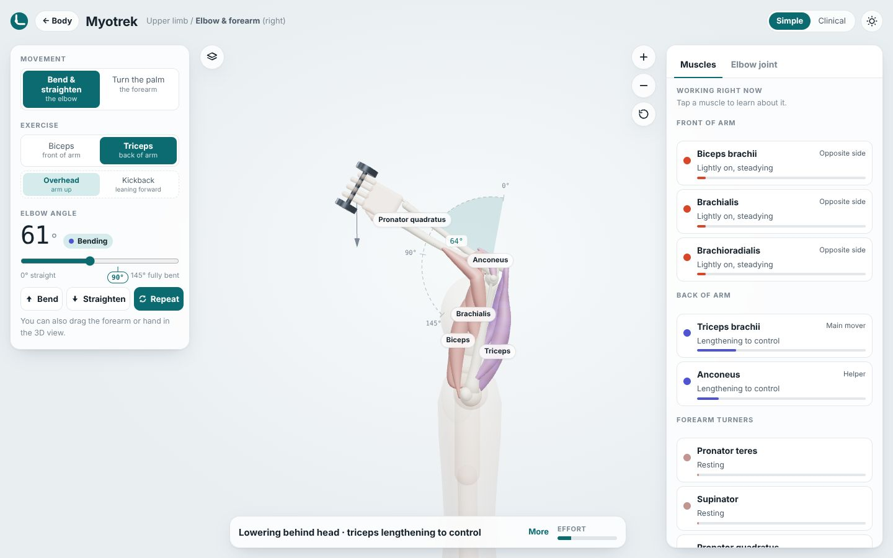
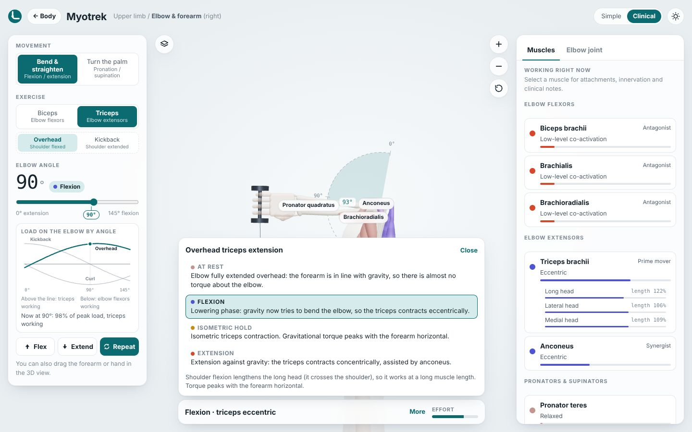
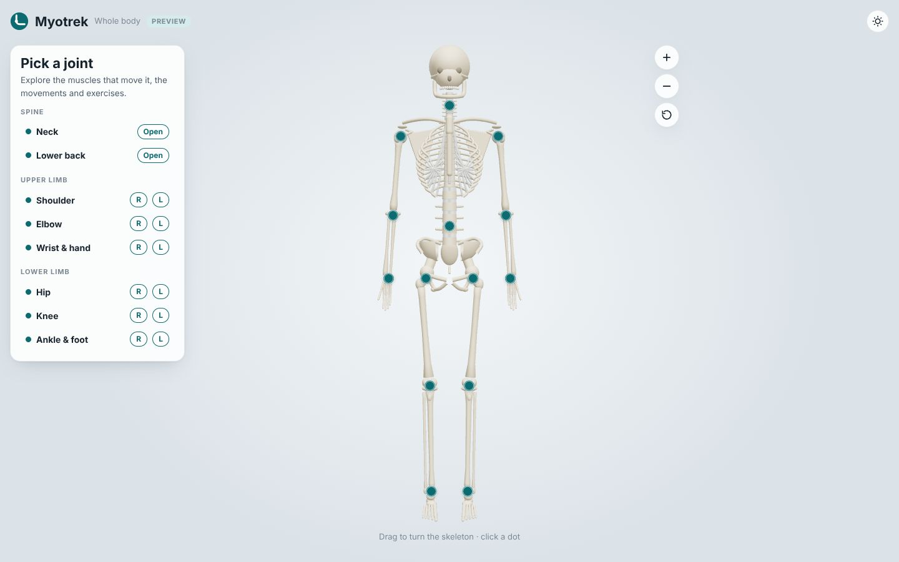

Watch muscles move in 3D
Turn and zoom a live model. Muscles bulge as they shorten and thin as they stretch, in time with the joint.
An interactive 3D guide to your joints and the muscles that move them. Pick an exercise and watch which muscles shorten, lengthen and hold, explained as simply or in as much detail as you like.

Textbooks show muscles standing still. Myotrek shows them working: during the lift, the lowering and the hold.
Play an exercise and follow the colours: red when a muscle shortens, blue when it lengthens under control, amber when it holds.
Clinical mode adds contraction types, each head of a muscle, an effort graph across the movement, and every phase explained.

Pick a joint on the left or right side. Each one comes with its own exercises and the body in position.

Turn and zoom a live model. Muscles bulge as they shorten and thin as they stretch, in time with the joint.
Colour shows it at a glance: shortening, lengthening under control, or holding. Moving stripes show the direction.
Simple mode explains it in everyday words. Clinical mode adds origins, insertions, nerves and contraction types.
Biceps curls, overhead triceps extensions, kickbacks, raises and more, each with the body in position.
An effort graph shows how the load on the joint changes through the movement, and why some angles feel harder.
Start from a full skeleton, pick any joint, left or right, and zoom straight into it.
Every muscle and movement can be read two ways. Switch at any time with one tap.
The well-known muscle at the front of your upper arm. It bends your elbow and turns your palm up.
Start with the whole skeleton. Tap a joint, left or right, and the view zooms straight in.
Curls, raises, extensions: the body moves into position and the movement plays on repeat.
Follow the colours, tap any muscle for its card, and read what is happening at each moment.
Myotrek is being made together with a practising physiotherapist, for patients who want to understand their exercises and for anyone learning anatomy. Each joint starts as a rough draft and is taken into depth once its content has been reviewed.
Joints so far:
Spotted something wrong, or want a joint or exercise next? Let us know.
Send feedback